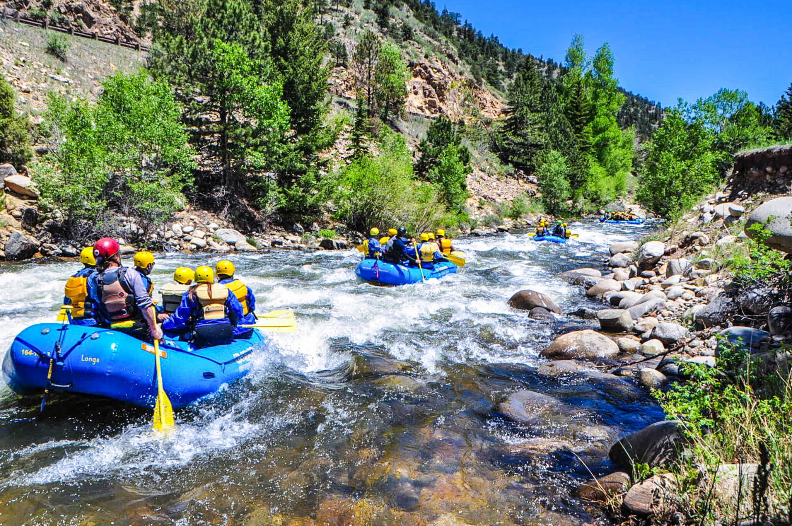

Our mission is to provide unforgettable experiences that ignite the thrill-seekers and explorers in all of us. With a steadfast creed to push the limits, conquer the unknown, and embrace the wild, we believe in creating memories that defy gravity and redefine what it means to live life to the fullest.
Yogi Bear Adventure
History
In 1985, amidst the political turbulence of Brazil's military regime, a humble Brazilian family dared to pursue their dream of sharing the thrill of whitewater rafting with the world. João and Maria Silva, along with their three children, started their rafting business with just one raft and boundless determination. Overcoming obstacles and winning the trust of locals and tourists alike, their commitment to safety and the environment propelled their business forward. As their expertise and exceptional customer service became renowned, adventure-seekers from far and wide sought out their thrilling rafting excursions. At Yogi Bear Brazil, we carry on the legacy of the Silva family's passion for adventure.
Our story began during a politically challenging time, when resources were scarce, but our commitment to excellence and love for the sport remained unwavering. With each passing year, we have expanded our fleet of rafts and assembled a team of skilled guides who share our dedication to delivering unforgettable rafting experiences. Today, we proudly invite you to join us as we navigate the rivers of Brazil, immersing ourselves in the awe-inspiring beauty of nature and creating memories that will last a lifetime. Come be a part of our remarkable journey, as we continue to make waves in the world of rafting, sharing the joy of adventure with individuals from across the globe.
Adventure Awaits You!